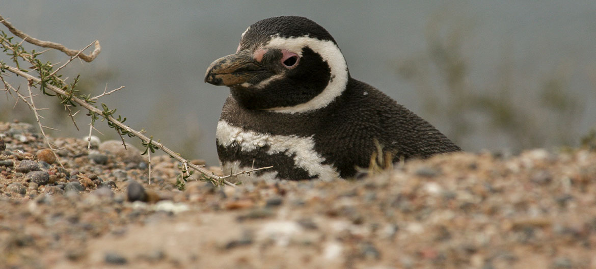
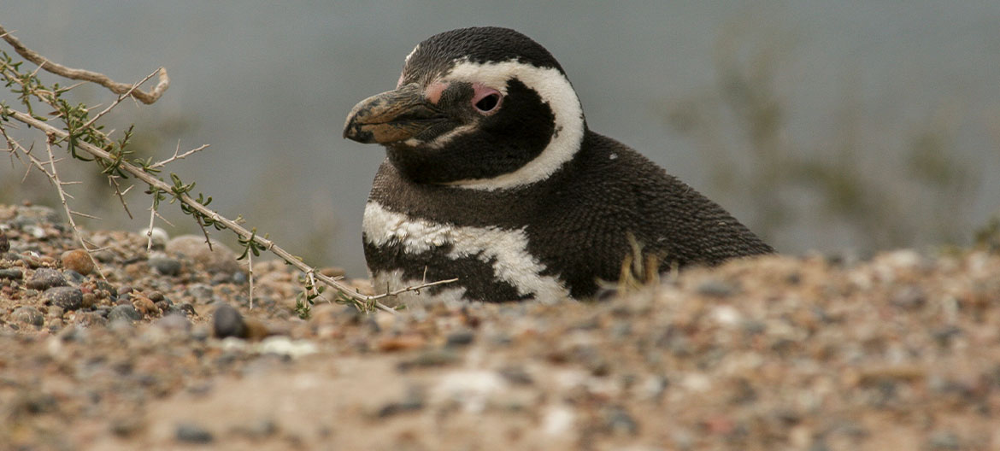

A sanctuary for majestic marine life and truly untouched natural beauty
The Atlantic Patagonian region runs from Puerto Madryn and the UNESCO-listed Peninsula Valdés to Argentina’s far south where Routes 3 and 40 merge. Imposing cliff-laden landscapes practically untouched by the human hand saddle the Patagonia’s coastline.
Here majestic marine creatures abound, including the breathtaking southern right whale, South American elephant seals, sea lions, dolphins, orcas, Rheas and Magellan Penguins. Explore tiny fishing villages where tradition reigns, discover the Río Santa Cruz estuary, the region’s petrified forests and more.
Peninsula Valdés is an ideal launch pad and base to venture further south, where you’ll discover the most inhospitable and solitary side of Atlantic Patagonia.
Here activities center on landscapes and flora and fauna, including the region’s famous whales, penguins and dolphins. This corner of the world is full of truly undiscovered gems. Destinations not to be missed include Puerto Deseado, where the river and sea combine, plus the region’s beautiful estancias near cattle and seaweed producing villages. You heard it - seaweed!
Editor’s note: There’s no one way to experience Peninsula Valdés & Atlantic Patagonia but we certainly recommend self-drive for greater autonomy and the chance to take it all in on your own terms.
CRAFTED IDEAS FOR YOU
▸ Make contact with the famous southern right whale and the majestic landscapes of the Peninsula Valdés
▸ Discover marine wildlife including the region’s many penguin colonies, whale watching and seal spotting
▸ See the region’s beauty from other perspectives including kayaking and bike riding
▸ Enjoy the dramatic landscapes of the Monte León National Park’s cliffs and beaches
▸ Visit Argentina’s seaweed production capital, Bahia Bustamante